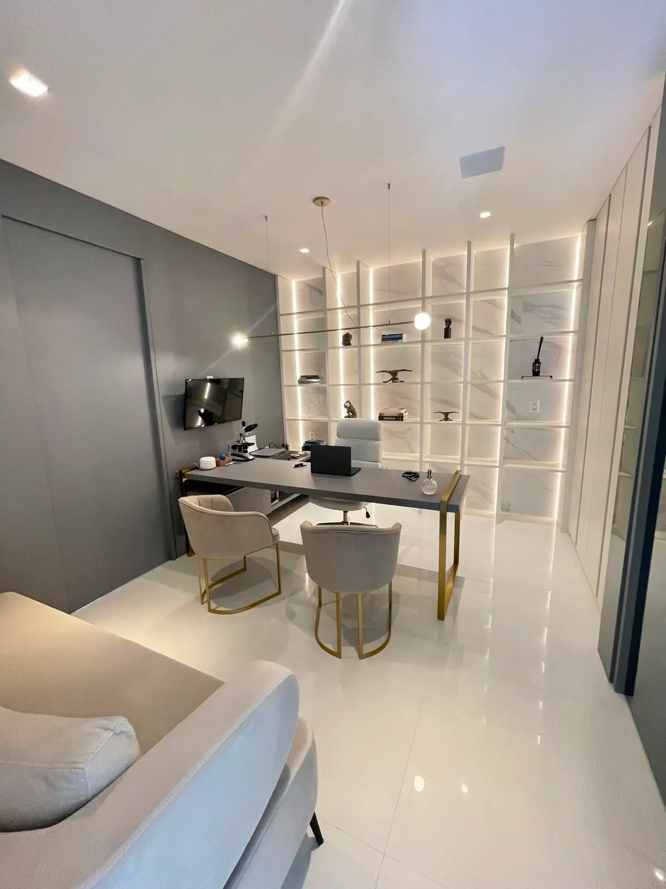

Envelhecer é inevitável. Envelhecer com saúde, disposição e autonomia é uma escolha
Acompanhamento especializado em longevidade e envelhecimento saudável com o Dr. Danilo Marques, no Instituto Vivance, em Maceió
Você se reconhece em algum desses pontos?
- Sente que a energia e a disposição não são mais as mesmas
- Notou perda de massa muscular ou força
- Preocupa-se com o histórico familiar de doenças crônicas
- Quer prevenir problemas em vez de só tratá-los quando aparecem
- Não sabe por onde começar a cuidar da longevidade de forma séria
Envelhecimento saudável não é sorte, é o resultado de acompanhamento, prevenção e decisões certas, feitas com orientação médica.
Por que investir em prevenção agora?
Muitas doenças que aparecem depois dos 50, 60 anos, cardiovasculares, metabólicas, ósseas, têm sinais que podem ser identificados e tratados décadas antes. Esperar os sintomas aparecerem significa perder a janela mais eficaz de prevenção. Um acompanhamento de longevidade bem estruturado atua exatamente nessa antecipação.
Como funciona o acompanhamento
Avaliação inicial
Histórico completo, hábitos e antecedentes familiares.
Investigação aprofundada
Exames hormonais, metabólicos, cardiovasculares e de composição corporal.
Plano individualizado
Estratégias de treino, nutrição, sono e, quando indicado, intervenções hormonais ou medicamentosas.
Acompanhamento contínuo
Reavaliações periódicas para ajustar a estratégia ao longo do tempo.

Sobre o Dr. Danilo Marques
Médico em Maceió (CRM-AL 7564) com atuação em medicina integrativa, prevenção de doenças, longevidade e performance.
Uma abordagem que une ciência e cuidado individualizado para cada fase da vida, buscando prolongar sua saúde, disposição e funcionalidade.
Falar com a equipeO que dizem nossos pacientes
"Cheguei aos 50 me sentindo muito cansada e com medo do histórico da minha família. O Dr. Danilo mudou minha visão sobre saúde. Hoje tenho mais disposição do que aos 30."
Paciente A. R.
"Sempre fiz check-ups, mas a abordagem da medicina da longevidade foi um divisor de águas. Finalmente entendi o que fazer na prática para envelhecer com força e vitalidade."
Paciente M. P.
Perguntas Frequentes (FAQ)
O que é medicina da longevidade?
Área focada em prevenir doenças crônicas e prolongar os anos de vida com saúde e funcionalidade, não apenas os anos de vida.
A partir de que idade vale a pena buscar esse acompanhamento?
Não há idade mínima fixa, mas é especialmente recomendado a partir dos 40 anos.
Como manter massa muscular com o passar dos anos?
Treino de força regular, proteína adequada e, em alguns casos, avaliação hormonal.
Quais exames são importantes?
Hormonais, metabólicos, cardiovasculares, densidade óssea e marcadores inflamatórios.
Quanto custa a consulta?
Consulte valores atualizados pelo WhatsApp do Instituto Vivance.
Dê o primeiro passo para envelhecer com mais saúde e autonomia
Fale diretamente com nossa equipe:
Tire suas dúvidas e escolha o melhor horário para a sua avaliação.
Quero agendar minha avaliação